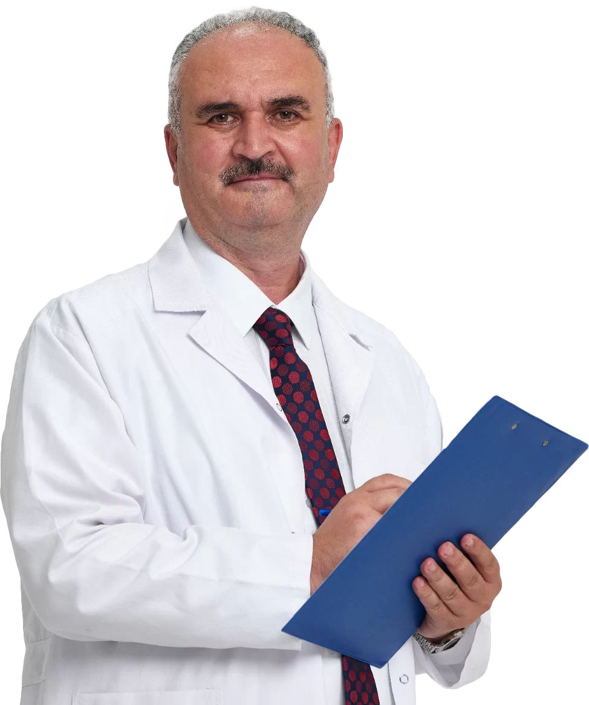

Dr. Hakan Özkul, 1967 yılında Ankara’da doğdu. Eğitim hayatına İzmit Lisesi’nden devam ederek buradan başarıyla mezun oldu. Yükseköğrenimini Gazi Üniversitesi Tıp Fakültesi’nde tamamlayarak Tıp Doktoru unvanını kazandı. O günden itibaren tüm hastalarının bütüncül sağlığına hizmet vermeye büyük bir kararlılıkla devam etmektedir.
Eğitim hayatı sırasında ve sonrasında hastalıkların tedavisinde bitkilerin gücüne tanık olmuştur. Modern tıbbın yetersiz kaldığı bazı durumlarda gerek ailesi gerekse çevresindeki diğer insanların uluslararası bilimsel nitelikte başvurduğu bitkisel desteklerin faydasını görmesi, bu alandaki büyük ihtiyacı anlamasına vesile olmuştur. Bu nedenle, henüz ülkemizde bu yönde bir yüksek lisans alanı oluşturulmadan önce, bitkileri tıp doktoru gözlüğüyle incelemek üzere Tıbbi ve Aromatik Bitkiler ön lisans bölümünü okumaya karar vermiş ve 2 yıllık eğitimi başarıyla tamamlayarak yeni bilgiler ve ufuklar edinmiştir.
Eğitimin ve bilginin farklı kaynaklardan da alınarak geliştirilmesi gerektiğine inanan Dr. Hakan Özkul, akademik kariyerine Eskişehir Anadolu Üniversitesi Sağlık Bilimleri Enstitüsü’nde Tıbbi ve Aromatik Bitkiler alanında yüksek lisans eğitimini de tamamlayarak devam etmiştir. 2014 yılında yayınlanan ve yürürlüğe giren Geleneksel ve Tamamlayıcı Tıp Uygulama Yönetmeliği uyarınca, T.C. Sağlık Bakanlığı tarafından tıp doktorlarına özel olarak düzenlenen sertifika programına katılarak Fitoterapi Eğitimi almıştır. Bu eğitimle birlikte fitoterapi uygulamaları yapmaya resmi olarak yetkili Fitoterapi Uzmanı Doktor unvanını kazanmıştır.
Türkiye’deki resmi akademik eğitimlerinin yanı sıra, bitkisel tedavinin en köklü uygulandığı bölgelerden biri olan Uzak Doğu'da da Fitoterapi Bitki Bilimi üzerine özel eğitimler almıştır. Fitoterapist Dr. Hakan Özkul, yurt içi ve yurt dışında birçok bilimsel konferans ve seminere katılarak vizyonunu sürekli güncellemektedir. Fitoterapi bilimine olan inancı ve insanların iyileşmesine yönelik hissettiği güçlü istekle hala araştırmaya ve gelişmeye devam etmektedir.
Ulusal ve uluslararası bilimsel araştırmaları güncel olarak takip eden Dr. Özkul, hastalıklar ve bitkiler arasındaki ilişkinin kanıta dayalı verilerle ispatlanması ve tüm insanların kullanıma açılabilmesi için çeşitli televizyon programlarına katılarak bilgilerini paylaşmaktadır. İnsanların bitkiler dünyasının genişliğinin farkında olmalarını, ancak fayda sağlamanın yalnızca bilimsel yöntemlerle belirlenmiş ve nitelikli ürünlerin kullanımıyla olacağını vurgulamaktadır. Fitoterapi biliminin popülist yaklaşımlardan uzak tutularak tamamen bilimsel kaynaklara dayandırılması gerektiğini savunmaktadır.
Türkiye ve bitkilerle tedavinin en çok geliştiği ülke olan Almanya tarafından onaylanmış Cemre Ab-ı Hayat ve Kibarlı Panax üreticisi Kibarlı Bitkisel Destek Ürünlerini geliştiren akademik kurulda görev alan Dr. Hakan Özkul, bu vesile ile birçok hastanın iyileşme sürecine katkıda bulunmuştur. Ülkemizde hak ettiği değeri göremeyen şifalı bitkilerin tanıtılması ve bilimsel çerçevede ele alınması için çeşitli makaleler kaleme almıştır. Dr. Hakan Özkul, Fitoterapi yönteminin doğru ve yaygın kullanılması amacıyla birçok ulusal TV programına konuk olarak halkı bilgilendirmeye devam etmektedir.
Halen İstanbul’da ikamet etmekte olan Dr. Hakan Özkul, herhangi bir devlet veya özel hastanede çalışmamaktadır. Çalışmalarını İstanbul'daki özel muayenehanesinde sürdürmekte olup, Tıp Doktoru kimliği ile Fitoterapi uzmanlığını birleştirerek hastalarının şifalanmasına destek olmaktadır. Dr. Hakan Özkul, evli ve 4 çocuk babasıdır.
Ankara'da dünyaya geldi. İlk ve ortaöğrenimini tamamladıktan sonra İzmit Lisesi'nden başarıyla mezun oldu.
Gazi Üniversitesi Tıp Fakültesi'nden mezun olarak Tıp Doktoru (M.D.) unvanını kazandı ve modern tıp alanında hekimlik hayatına başladı.
Hastalıkların tedavisinde bitkilerin gücüne tanık olarak bu alanda uzmanlaşmak istedi. Türkiye'de henüz yüksek lisans programı yokken 2 yıllık Tıbbi ve Aromatik Bitkiler ön lisans programını tıp hekimi gözlüğüyle tamamladı.
Eskişehir Anadolu Üniversitesi Sağlık Bilimleri Enstitüsü'nde Tıbbi ve Aromatik Bitkiler yüksek lisans programını bitirerek akademik birikimini üst seviyeye taşıdı.
2014 yılında yürürlüğe giren Geleneksel ve Tamamlayıcı Tıp Yönetmeliği uyarınca Sağlık Bakanlığı'nın hekimlere özel eğitim sertifika programını başarıyla bitirip yetkili Fitoterapi Uzmanı Doktor unvanını aldı.
Uzak Doğu'da da Fitoterapi Bitki Bilimi eğitimi alarak uluslararası tedavileri yakından inceledi. Türkiye ve Almanya onaylı Kibarlı Bitkisel Destek Ürünleri akademik kurulunda yer aldı.
Halen İstanbul'da kendi özel muayenehanesinde tıp doktorluğu ile fitoterapi uzmanlığını birleştirerek hastalarına şifa sunmaya, TV programları ve makaleleriyle bilimsel fitoterapiyi tanıtmaya devam etmektedir.